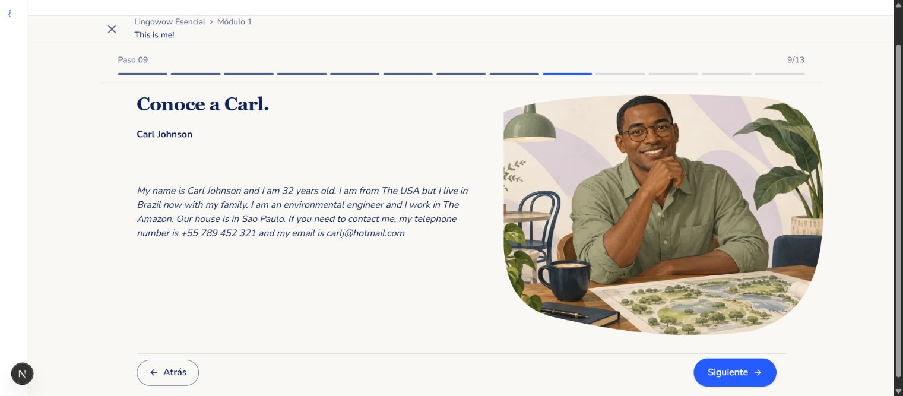
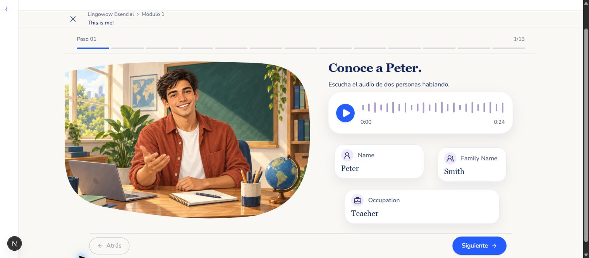

Se conservan personaje, entorno completo, gran escala y contenido a la izquierda. La pantalla real respeta todo el texto publicado y los 13 pasos de la unidad. La referencia usa una ventana más estrecha y un texto abreviado; no es una comparación de píxeles idénticos.

Capturas locales del viewer real. La barra lateral simplificada pertenece únicamente a la ruta temporal de revisión, que se elimina antes del despliegue.